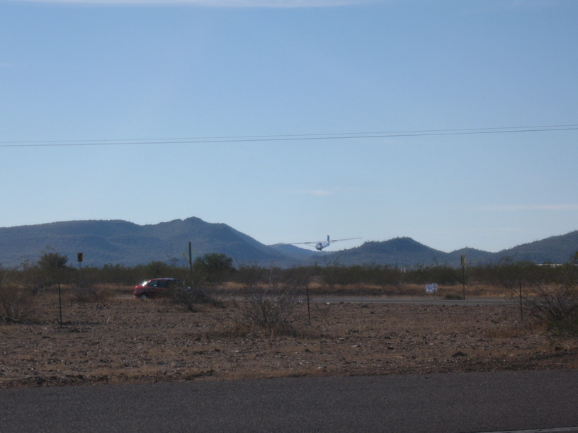

29 Nov 2008, Wickenburg, AZ
Back on the road after a very relaxing 3 day break in Scottsdale. Stopped by Carefree, AZ, to meet Dad's colleague & friend Dan Briceland. Very friendly, very beautiful house, very beautiful terrain.
A few more flats today—all on the new tire. Got into Wickenburg after dark (actually, I changed 2 flats after dark too). Also, getting back on the bike after a break leaves me sore.
Staying tonight w/a friend of Dr. Briceland. Maureen is a very energetic woman—even in her 70s.
I've had a get-it-done attitude today, including calculating just how quickly I could make it to San Diego. Now I'm tired & ready to pass out.
